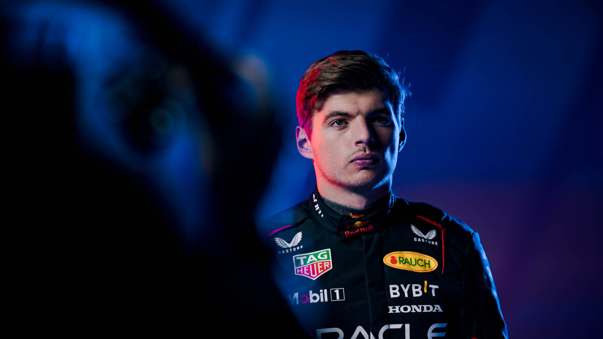
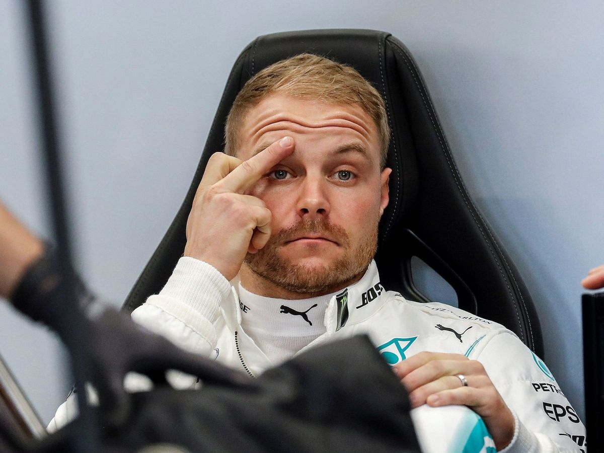

Temporada F1 2022
Campeonato
A temporada F1 de 2022 foi emocionante, com grandes corridas e surpresas ao longo do campeonato. Nesta página, você encontrará todas as informações sobre a temporada, desde os resultados das corridas até os pilotos e equipes que participaram do campeonato.
Pilotos
- Lewis Hamilton
- Max Verstappen 
- Valtteri Bottas 

Lewis Hamilton é um dos pilotos mais bem-sucedidos na história da F1, com sete títulos mundiais. Ele correu pela equipe Mercedes e conquistou seu oitavo título mundial em 2022. Hamilton é conhecido por seu talento e habilidade nas corridas, e é um dos favoritos dos fãs.
Max Verstappen é um jovem piloto holandês que competiu pela equipe Red Bull Racing em 2022. Ele foi o vice-campeão mundial na temporada, mostrando sua habilidade e talento nas pistas. Verstappen é conhecido por sua agressividade e por sua capacidade de ultrapassar outros pilotos.
Valtteri Bottas é um piloto finlandês que correu pela equipe Mercedes em 2022. Ele terminou em terceiro lugar no campeonato, mostrando sua consistência e habilidade nas pistas. Bottas é conhecido por sua capacidade de liderança e sua dedicação ao esporte.